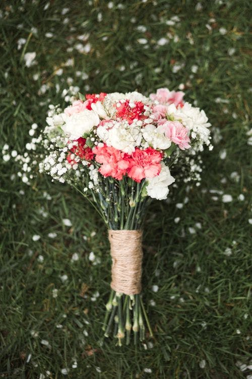

القرنفل (Dianthus Caryophyllus) نبات معمر أزهاره جيدة للقطف، أوراقه شريطية، والأزهار تختلف حجماً ولوناً، موطنه الأصلي أوروبا الوسطى وجنوب أفريقيا، وينتمي للفصيلة القرنفلية، أنتج منه أصناف لا تحصى بالتهجين بين أنواع مختلفة منه فمنها أبيض الأزهار وأحمر الأزهار و وردي الأزهار، ومنها بألوان ممزوجة مع بعضها… هذا بالإضافة لاختلاف الحجم.